Paddle out from the dock. Watch the pelicans come in. Cast a line, find a trail or head farther into the Chilcotin. And when the lake freezes, come back and do it all differently.
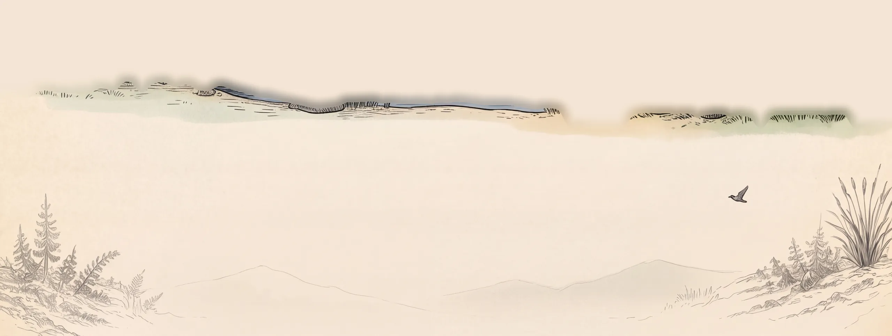
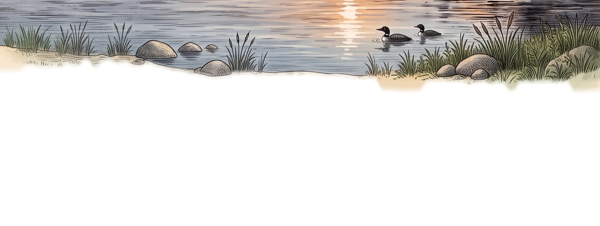
Grab a paddle and head out from the dock. Canoes and pedal boats are available for guests.
See what’s biting.
Licences, limits and seasons change. Check the B.C. freshwater fishing regulations before you go.
Pelicans on the lake in the warmer months, and birds on the water all summer. Most of it turns up without being looked for.
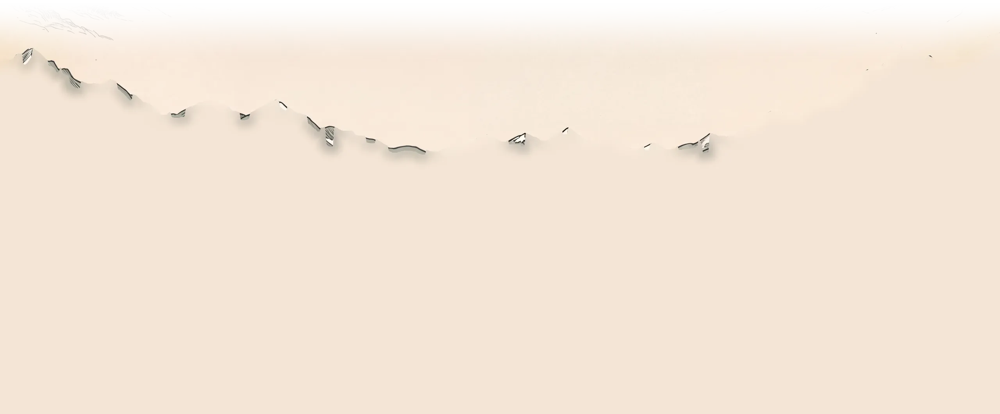
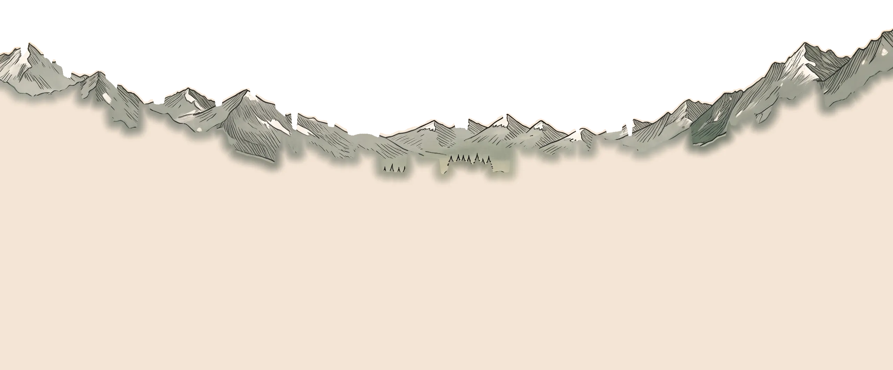
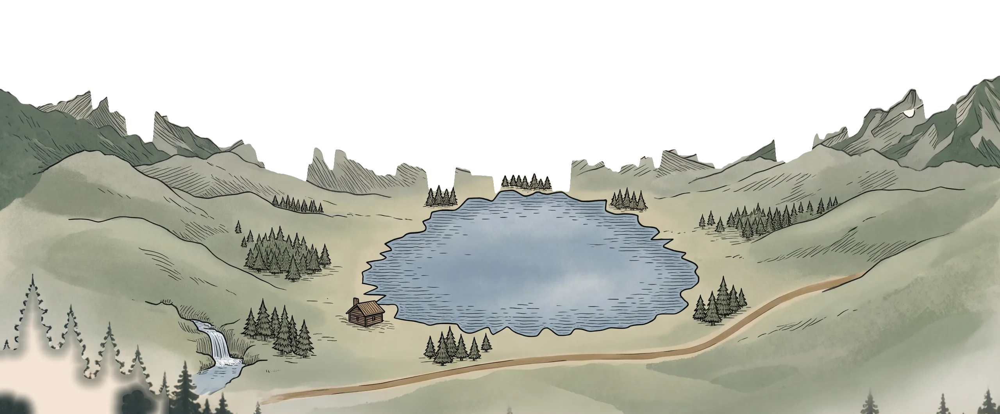
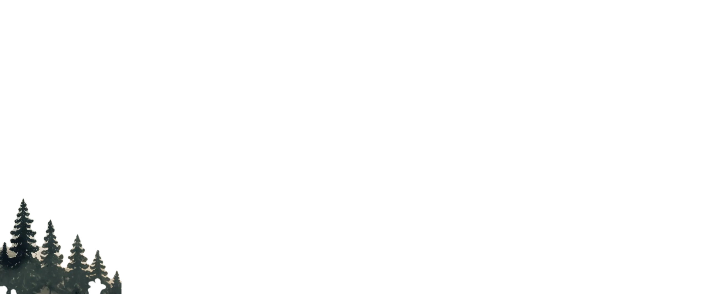
Adventure is all around Anahim Lake. Use the map to explore some of our favourite places to go.
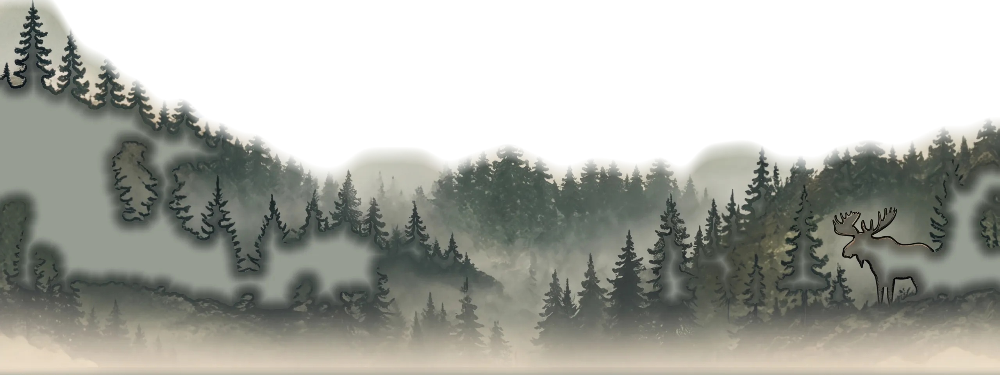
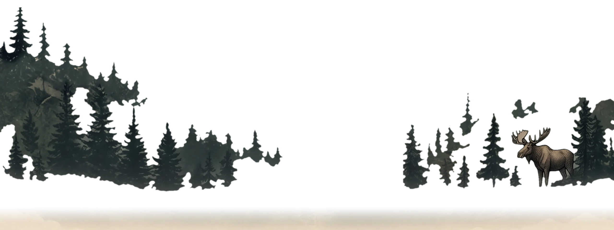
Scenic drives lead to some incredible places.
The river drops off the Precipice into a canyon walled in basalt.
Farther into Tweedsmuir Park, and a longer day than the others.
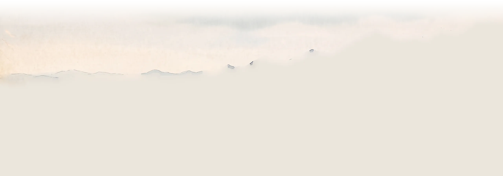
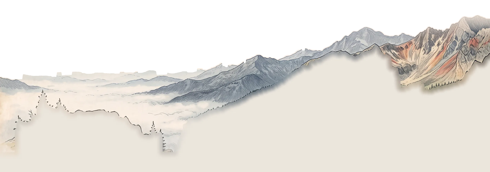
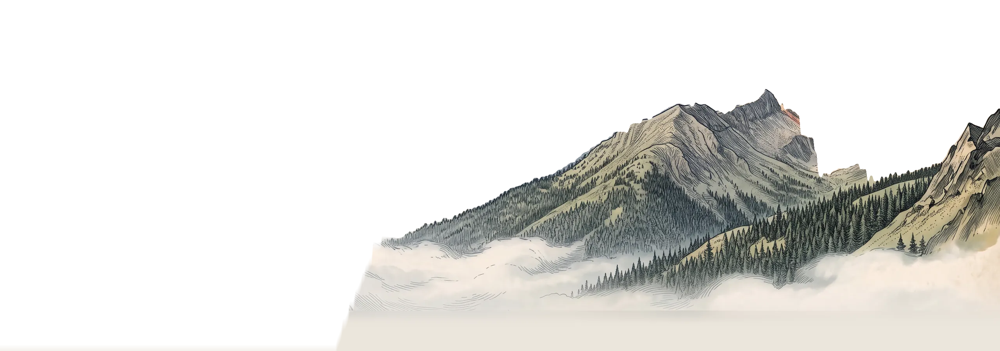
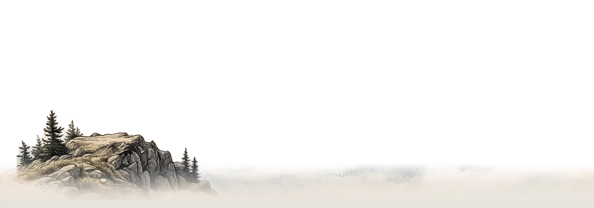
Hike through forests, valleys and alpine country. Adventure in every direction.
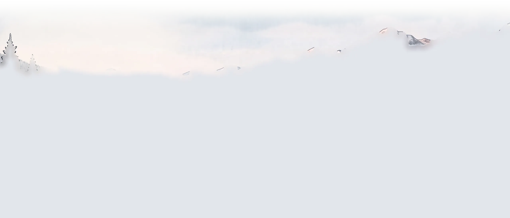
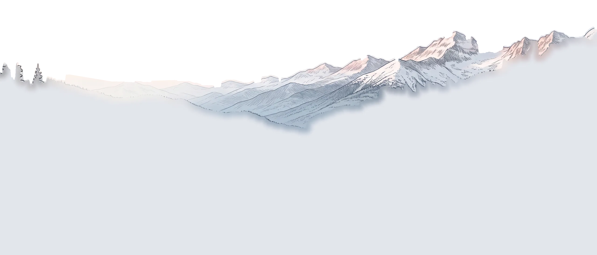
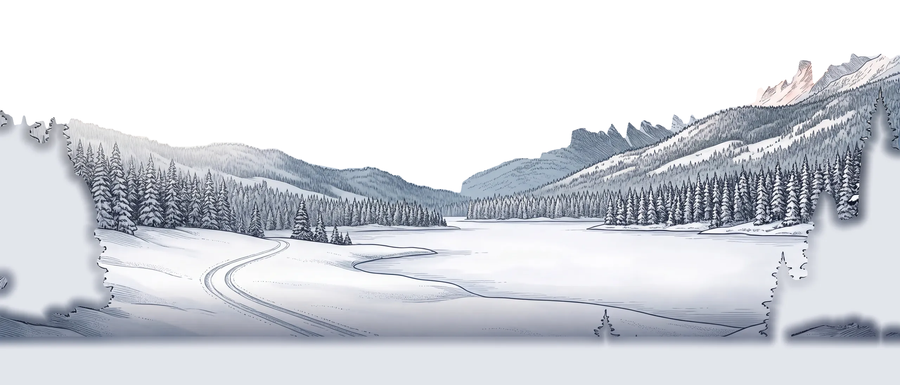
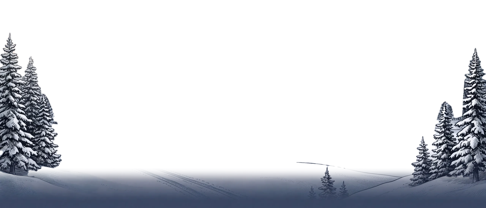
When the lake freezes…
A whole new way to experience Anahim Lake and the Chilcotin.
Miles of backcountry once the snow is down.
Drill a hole, set up and wait it out. Check the ice before you walk on it.
When conditions permit, there’s nothing quite like skating out on a frozen lake.
End of prototype · chapter 6 begins in this dusk blue